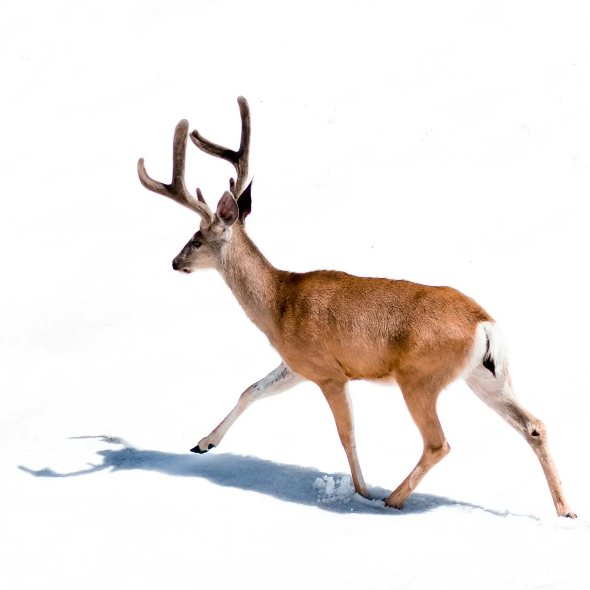

눈 덮인 황야의 고요함은 동물의 발굽 아래에서 희미하게 들리는 얼음의 바스락거리는 소리에 의해서만 깨졌다. 하지만 이상하게도, 그것은 뒤에 아무런 자국도 남기지 않았다. 그것의 형체는 우아하게 움직였는데, 마치 이 세상에 속하지 않은 것처럼 보였다. 앙상하고 생기 없는 나무들은 슬프고 조용한 춤에 갇힌 것처럼 얼어붙은 채 서 있었다. 위의 하늘은 칙칙한 회색이었고, 땅의 끝없는 하얀색과 섞여 모든 것을 공허하고 차갑게 만들었다.
[The silence of the snowy wilderness was broken only by the faint crunch of ice under the animal’s hooves, though strangely, it left no tracks behind. It’s form moved gracefully, as if it didn’t belong to this world. The trees, bare and lifeless, stood frozen in place, like figures stuck in a sad, silent dance. The sky above was a dull gray, blending into the endless white of the ground, making everything feel empty and cold.]
그럼에도 불구하고, 그 생물은 계속 움직였다. 그것의 크고 뒤틀린 뿔은 날카롭고 기묘하게 위를 향해 뻗어 있었는데, 마치 고대의 야생적인 무언가의 손가락 같았다. 그것의 검은 눈은 깊고 공허했으며, 마치 다른 누구도 볼 수 없는 것을 보는 것처럼 앞을 응시했다. 각각의 발걸음은 부드러운 소리를 냈지만, 눈은 그것이 걸어간 곳의 흔적을 전혀 보여주지 않았다. 마치 그곳에 존재하지 않은 채로 지나간 것처럼 말이다.
[Still, the creature moved. It’s large, twisted antlers reached upward, sharp and eerie, like the fingers of something ancient and wild. Its dark eyes were deep and empty, staring ahead as if it saw things that no one else could. Each step made a soft sound, but the snow showed no trace of where it had walked, as though it had passed without ever being there.]
그것의 섬세한 발걸음 아래에서, 눈은 희미하게 속삭이는 것 같았다. 마치 오래전 겨울의 잊혀진 비밀을 공유하는 것처럼 말이다. 그것의 그림자는 이상하게 늘어졌고, 이해할 수 없는 방식으로 뒤틀렸다. 마치 표면 아래에서 숨겨진 무언가가 깜박이는 것 같았다. 공기는 무겁게 느껴졌는데, 마치 보이지 않는 무언가가 지켜보고 있는 것처럼, 손이 닿지 않는 곳에 있는 무언가가 고요함 속에 숨어 있는 것 같았다.
[Under its delicate steps, the snow seemed to whisper faintly, as if sharing long-forgotten secrets of winters past. Its shadow stretched out strangely, twisting in ways that didn’t make sense, like something hidden flickering beneath the surface. The air felt heavy, as though something unseen was watching, something just beyond reach, hidden in the stillness.]
만약 그것이 정말 사슴이라면—그 사슴은 잠시 멈춰 섰다. 그것의 숨결은 공중에 머물렀고, 안개는 차가운 하늘로 솟아올랐다. 잠깐 동안, 세상은 변하는 것 같았고, 어둠의 깜빡임이 공기를 통과했다. 무언가 멀리 있지만 가까운 것, 마치 거의 기억나는 꿈처럼 말이다. 그러다가, 그것은 순식간에 사라졌다. 그 동물은 외로운 길을 계속 걸어갔고, 그것의 발 아래에서 속삭이는 눈의 소리만이 끝없는 하얀 세상에서 유일한 동반자였다.
[The deer—if it truly was a deer—paused for a moment. Its breath hung in the air, mist curling up into the cold sky. For just a second, the world seemed to shift, and a flicker of darkness passed through the air, something distant but close, like a dream almost remembered. Then, just as quickly, it was gone. The animal continued its lonely path, the sound of snow whispering beneath its feet the only company in the endless white.]